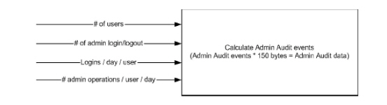
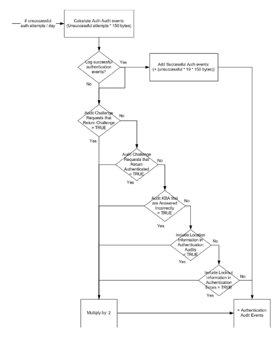

|
IdentityGuard Server 13.0 Administration Guide |
|
IdentityGuard Server 13.0 Administration Guide |
In cases where a rolling file appender is used (AUDIT_FILELOG), you may want to change how much audit log data to keep, and how long to keep it. The properties that control this behavior are:
● AUDIT_FILELOG Maximum File Size
● AUDIT_FILELOG Maximum Number of Backup Files
By default, AUDIT_FILELOG Maximum Number of Backup Files is set to 10, but you can change the property to save any other number (n) of backup files. This means that you have a maximum of n+1 audit log files on your system at any time. The file written to is always identityguard_audits.log. When this file reaches the limit set by the AUDIT_FILELOG Maximum File Size property, it is renamed identityguard_audits.log.1, and a new identityguard_audits.log file is created. With every new file created, the existing file numbers of all of the existing audit log files are incremented, until there is a series of files named:
● identityguard_audits.log
● identityguard_audits.log.1
● ...
● identityguard_audits.log.n
When a full complement of audit files have been written, the oldest file, identityguard_system.log.n is deleted, and all of the existing files are renamed, as described earlier.
The default for AUDIT_FILELOG Maximum File Size is set to 1000 KB, which means that each audit log file is never larger than 1000 KB. With the AUDIT_FILELOG Maximum Number of Backup Files set to 10, the default, you have a maximum of 10 backup files at any given time.
Doing the calculation, if you retain the defaults set in Entrust IdentityGuard, you will have a maximum of 10 MB of audit log data backed up at any one time (10 * 1000 KB).
If your organization’s backup standards require that more (or less) audit log data be kept, you can modify these two properties to save the required volume of data.
The amount of audit data generated depends on many factors, and may be difficult to estimate until the system has been running for a while. More audit data is generated during system setup, for instance, than you see after the system is in normal operation.
There are two types of audit log events, authentication and administration. (Administration is equivalent to the system and administrator audit categories in the Audit Monitor.)
Administration audit events include login, logout, and all administration operations. Administration events are very dependent upon the number of users in the system and how frequently they login, because each user needs administrator attention now and then for such situations as:
● forgotten password
● expired grid card or token
● lost or misplaced grid card or token
● lockout
Factors that determine how much authentication audit data is generated include:
● How many users are registered in your system.
● How often each user logs in to your system: If you are running an online banking operation, each user may log in only once or twice a week, whereas if this is a system used by employees every day, then each user probably logs in at least once a day.
● Whether or not successful authentications are logged: Unsuccessful authentications are always logged, but you can set Entrust IdentityGuard properties to also log successful authentications by setting Audit Successful Authentications to True. See Authentication Audit and Error Settings. An authentication audit log, whether successful or not, generates 100-200 bytes of data.
If you know how many unsuccessful authentications you have in your log each day, you can estimate the number of successful authentications you would be adding by changing this setting. The rule of thumb is that, for 100 login attempts, 95 attempts will be successful and 5 will be unsuccessful (19 times more successes than failures).
● Whether or not other Entrust IdentityGuard authentication operations are logged: Each of these properties, if set to True, increases the volume of audit log data written to the audit log file. See Authentication Audit and Error Settings for details about the following Entrust IdentityGuard properties:
– Audit Challenge Requests that Return Challenge
– Audit Challenge Requests that Return Authenticated
– Audit Knowledge-Based Questions that are Answered Incorrectly
– Include Location Information in Authentication Audits
– Include Lockout Information in Authentication Errors
If your organization’s backup and archive processes require, for example, that you keep one month’s worth of audit logs, the easiest way to set your properties may be:
● Set AUDIT_FILELOG Maximum File Size = one day’s worth of audit log data
● Set AUDIT_FILELOG Maximum Number of Backup Files = 30 files (for 30 days, for example)
To get a rough idea how much audit log data your organization generates in one day, perform the following administration event estimate, and one of the two procedures for estimating the amount of authentication audit log data that will be produced.
Note: You may find that your organization generates too much audit log data each day to store a full day’s worth in just one file. If this is the case, decrease the amount of data per file (AUDIT_FILELOG Maximum File Size) to a reasonable size, and increase the number of files (AUDIT_FILELOG Maximum Number of Backup Files) to make sure that you still backup the required amount of audit log data.
After calculating the volume of data produced for administration events and authentication events, add the two numbers together to get an estimate of the amount of data generated each day, like this:
administration events log data + authentication events log data = total audit log data
To calculate the volume of administration audit log data your system is generating each day
1. Gather the following information:
● the number of users logging in to your system
● the number of times users log in every day
● the number of times administrators log in and out
● the number of operations performed for users each day
Each user or administrator login and logout, and each administrator action generates an audit event.
2. Calculate the estimated number of administration audit events:
administration events log data = administration events * 150 bytes
Where:
150 is the approximate number of bytes per administration event
Calculate administration audit events

To calculate the volume of authentication audit log data your system is generating each day
1. Gather the following data:
a. the number of unsuccessful authentication attempts in one day
Note: A rule of thumb is that there are about 5 failed authentications for every 100 attempts, so for 95 successful logins, there were probably about 5 unsuccessful attempts. This assumes that 19 of each 20 login attempts are successful.
b. whether or not you are logging successful authentications
c. whether or not you have set any of these Entrust IdentityGuard properties to True:
– Audit Challenge Requests that Return Challenge
– Audit Challenge Requests that Return Authenticated
– Audit Knowledge-Based Questions that are Answered Incorrectly
– Include Location Information in Authentication Audits
– Include Lockout Information in Authentication Errors
2. Calculate the estimated number of Administration audit events. (See Calculate authentication audit events.)
Unsuccessful log events = Successful log events/19
Authentication events log data = (Unsuccessful log events * 150 bytes) [* 2] [+ Successful log events * 150 bytes]
Where:
150 is the approximate number of bytes stored per event
19 is the approximate ratio of successful to unsuccessful logins (95/5)
[2] (optional) takes into account additional events logged. Use this factor only if any additional Entrust IdentityGuard properties listed in 1.c) above are set to True.
[Successful log events * 150] (optional) Include this parameter only if Audit Successful Authentications is set to True.
Calculate authentication audit events

To calculate the value for AUDIT_FILELOG Maximum File Size
1. Add the administration events log data and authentication events log data calculated above to get the total memory required to store audit events generated each day:
audit events disk space required = administration events log data + authentication events log data
This is the daily memory requirement for audit log files on your installation.
2. (Optional) If the daily space requirement is too large to be held in one file, decrease the AUDIT_FILELOG Maximum File Size and increase the AUDIT_FILELOG Maximum Number of Backup Files property to accommodate your backup requirements in a greater number of backup files.
The formula is:
Audit events memory requirements = AUDIT_FILELOG Maximum File Size * AUDIT_FILELOG Maximum Number of Backup Files